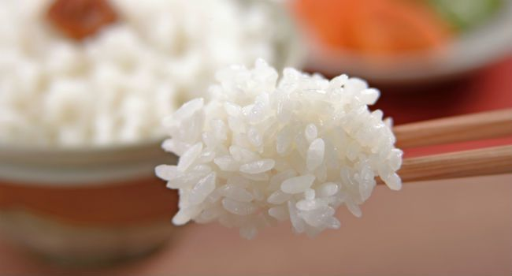
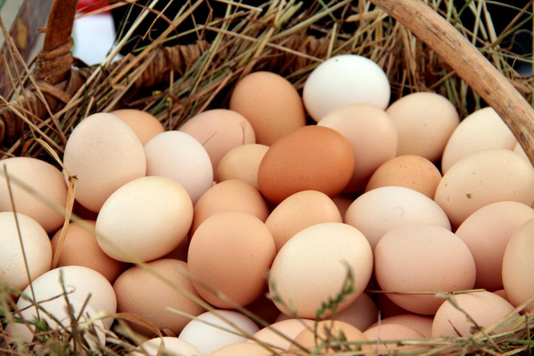
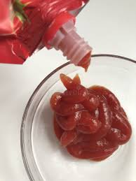
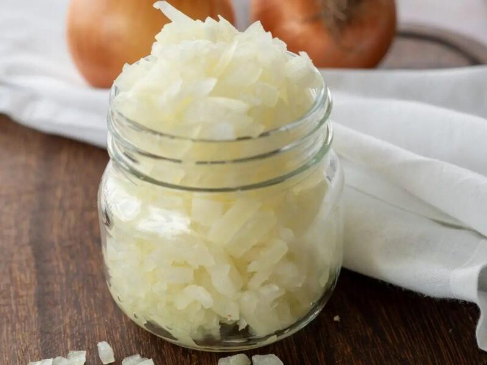
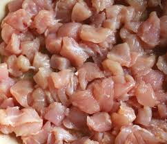
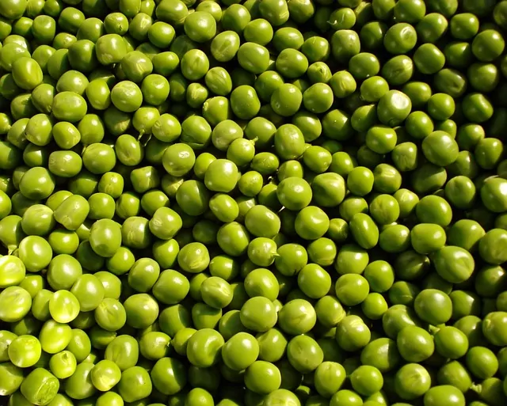
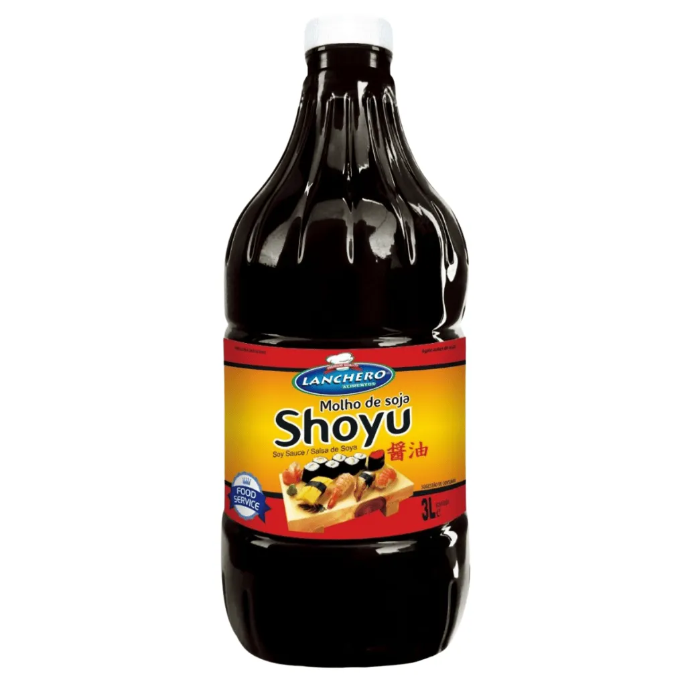
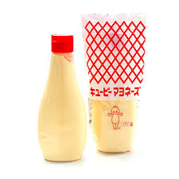
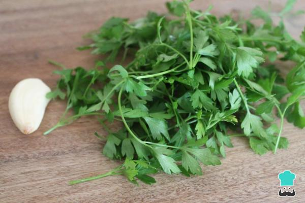

Ingredientes do Omurice
Ingredientes Base

Arroz Japonês
Arroz de grão curto, essencial para a textura

Ovos Frescos
Ovos de qualidade para uma omelete

Ketchup
Tempera o arroz e dá cor característica
Ingredientes para o Arroz

Cebola
Cebola picada para dar sabor ao arroz

Peito de Frango
Cubos de frango para a versão clássica

Ervilhas
Para cor e textura adicional
Temperos e Finalização

Molho Shoyu
Um toque de umami ao arroz

Maionese Japonesa
Kewpie mayo para cremosidade extra

Salsinha
Para decorar e frescor